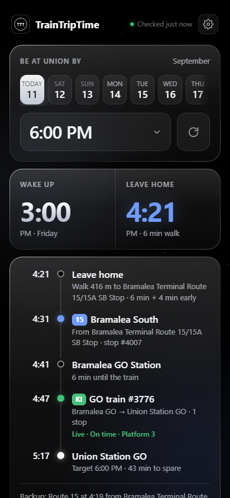
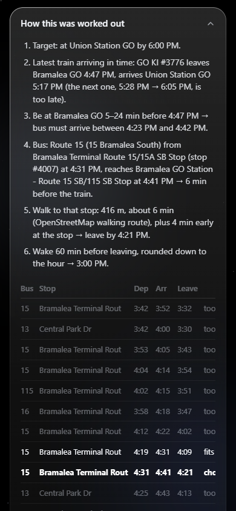
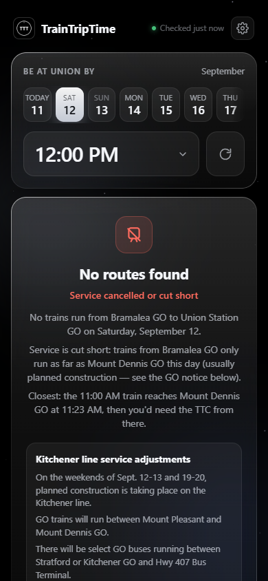
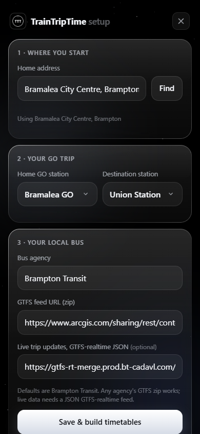

TrainTripTime works backwards from when you need to arrive — through the GO train timetable, live delays, and your local bus — to the minute you should leave home. Then it shows its work.


Trip planners answer "what if I leave now?" This answers "when do I have to leave?" — with your own rules.
Latest train that makes it, the bus that lands you on the platform in your window, when to leave, when to wake.
GO departure status and platforms, line alerts, live bus predictions, and construction notices for the week you pick.
Every rule applied, every bus and train considered and why it lost, plus the exact feed versions used.
Weekend short-turns are detected from the timetable itself and reported plainly, with the closest option.
Setup geocodes your address, takes any agency's GTFS, and lets you prefer the routes you'd really ride.
Socket-activated on a Raspberry Pi: it starts on your first tap and exits when you're done.
Deterministic, explainable, and small enough to read in one sitting.
It lives on a shared 1 GB Raspberry Pi next to other services, so every byte had to justify itself.
GO's stop_times.txt is streamed row by row and reduced to the trips that matter; requests only ever read the small index.
systemd holds the port and hands the socket over on demand; the server exits after ten quiet minutes.
Standard-library Python and vanilla JS. No build step, no package installs on the Pi.
Designed mobile-first to live on a home screen.


Python 3.10+. Open the page and it walks you through setup.
git clone https://github.com/shreywy/TrainTripTime.git cd TrainTripTime python server.py # → http://localhost:8765